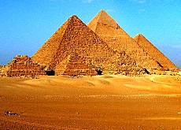
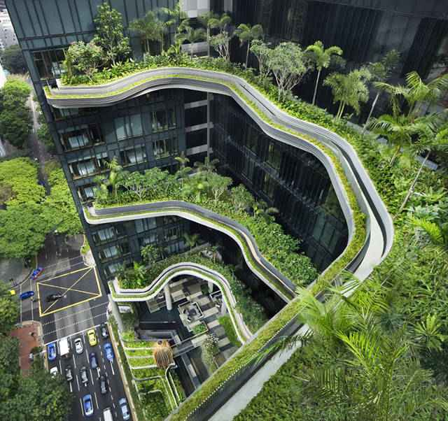
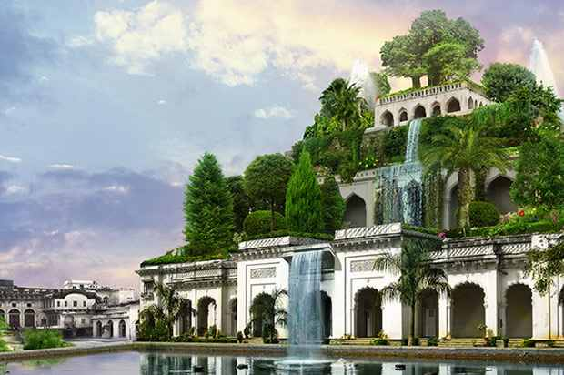
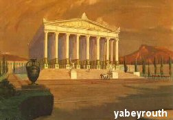
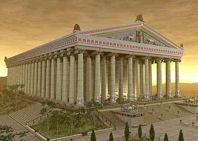
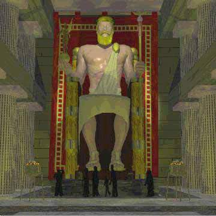
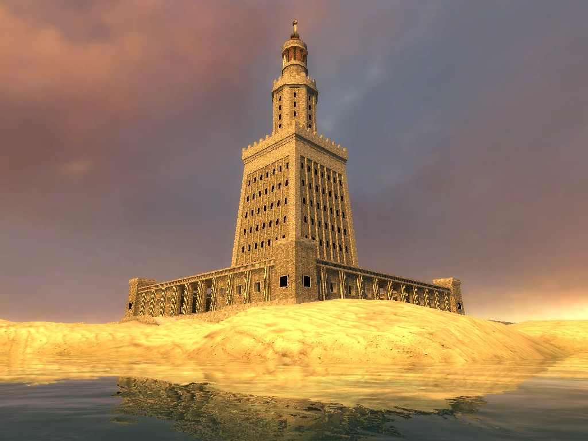
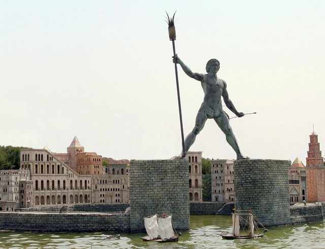
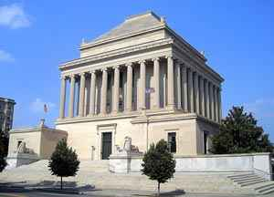

|
In Giza near Cairo, the Egyptian capital . And built around 2480-2550 BC. M Great Pyramid of the most important Egyptian Antiquities , which is 28 km from Cairo and built by one of the kings of Egypt ancients of the Fourth State , which ruled the country for thousands of years they call Cheops The Greeks And they call him Ikhyeeobs Bani name to be the tomb of Cheops and died this Jabbar, who wanted to perpetuate his name and his body 's Tomb a big name , but was left to marvel at and stones for construction and architectural grandeur which has a height of about |
 | |
| it called the hanging as they grown on balconies palaces and royal palace balcony Babylon and that about 600 BC. M and where he in honor of his wife built Nebuchadnezzar owner of hanging gardens and he wants to renew the city of Babylon in order to fit the beauty and grandeur and greatness of his city and was once: the walls of a height of 350 feet and thickness 87 feet and had these walls hundred door is made of gold and each section lists and ceilings of gold also . The greatest thing in the city pending or rockeries outstanding .alta gardens are considered sedition and wonderful countries and antiquity was built on the stone decades Nafees presented gifts to the king in agriculture were layers suitable for different plants and trees and the water lifted and stored in the upper layers tanks for watering trees, The construction shall be deemed one of the greatest architectural arts reached Babylon and Nineveh, where related classes with each tray and a wide Shahu spring comes and blooms and foliate trees and roses in these spikes amid high heat, these gardens be a paradise on earth published smell fragrant , cold, kindness to deserve to be one of the wonders of the world seven built by Nebuchadnezzar in order to enjoy his wife's air, tidiness and beauty and smell and amenities faces and stunning landscape |   | ||
| In Greece, built around 356 BC woman representing motherhood and synthesized Greeks worship so filmed in Tmathiljeebh represents smart and strong and young women , a building along 425 feet and a 127- mast height of 60 feet and a section of which is decorated with statues and images of various graphics and some of them are still preserved in the British Museum and some Hajjar used to build a church in Istanbul |   | ||
|  | |||
| And a height of about 134 m in Alexandria , Arab Republic of Egypt , the Egyptian city of Alexandria currently bride and the Mediterranean Sea when it was built by Alexander the Great conquered Egypt and became the largest Mediterranean ports and in 285 to 247 BC. As a result of the expansion of international trade between Alexandria and the world Ptolemy Philadelphus referee decided to build a beacon to ships was built on an island near Alexandria called Faross and build on the Babylonian style and built in irresistible waves where he developed solid stones to Hatdha and ensured their parts shot molten At the top is a great stove ignite a fire inside the fuel holds up vehicles and then submitted to the top ropes and contains 300 rooms on the words of one historian where the military lives to protect the country and is said to be Summit in large reflective mirror to burn enemy ships , but the newborn Umayyad caliph following the intrigue of the Emperor of Constantinople was deceived and demolished after luring him to contain treasures beneath in 1375 the lighthouse whole fell as a result of an earthquake in the sea |  | ||
| In Rhodes, Greece in 280 BC. M large bronze statue of not now exist but selling long ago as pieces of precious metals and things and he was found in Rhodes Island in Greece currently is a knight carrying a torch left hand and crossbow in the other hand Mada his feet to pass Navy ships between Hadtah height of about 50 m The statue was destroyed by 65 years after an earthquake hit the whole region in 284 BC. M and large-sized fingers are larger than the Statue of this era was from within the spiral staircase from the base to the head and said to the people of the island were put fire in the eyes of the statue to guide ships at sea and by the way Rhodes Island, one of the important tourist islands of good in Greece currently. |  | ||
|
Above It was about 353 BC. M to the king of Caria in Central Asia banana and for the Lord of the Greeks and the temple that is rectangular in shape and multi- large rooms and is made from the mold of wood and veneered with ivory , gold, and some historians that he was sitting on a throne and on his head the crown of olive and holds his hand right statue of a woman made of ivory and gold represents the victory and left hand says scepter and an eagle perched upon his clothes have been the throne of gold and also add to the precious metals and gems , ivory, private statue exaggerated and its value , as they say , but as a symbol of the era of Greek before. |
 |